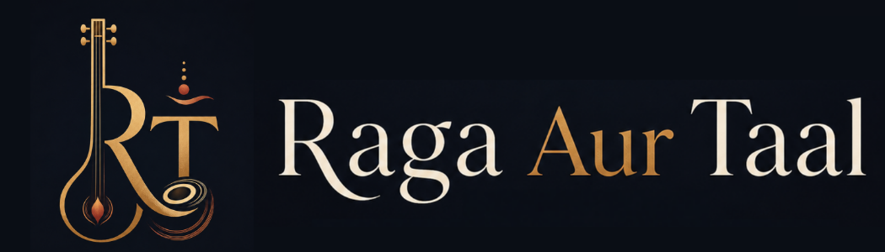

Exam levels
Explain the progression from early levels through more advanced study in a parent-friendly way.

ABGMVM
A practical section for families and students navigating Akhil Bharatiya Gandharva Mahavidyalaya Mandal exams, music theory, practical preparation, and daily practice.
Explain the progression from early levels through more advanced study in a parent-friendly way.
Build study notes for terms, raag details, taal structures, and written exam preparation.
Practice checklists, repertoire tracking, audio review, and exam-day preparation.
Approach
The goal is to translate formal requirements into clear practice steps while respecting the depth of the tradition.